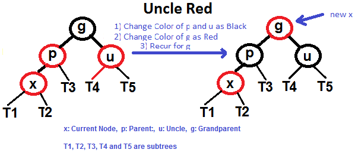
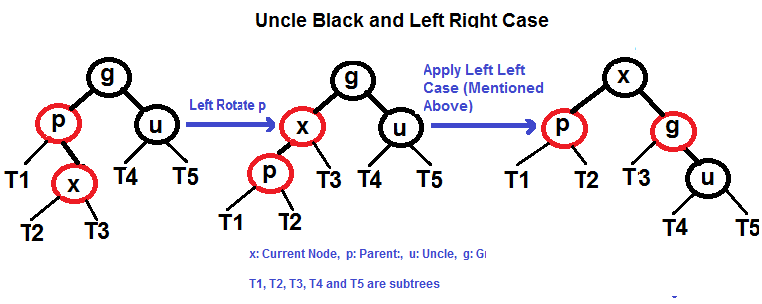

红黑树
红黑树是一个二分查找树具有下列的属性:
- 每一个节点要么是红的，要么是黑的
- 每一个叶子节点(null)是黑的
- 如果一个节点是红的， 那么它的两个孩子是黑色的
- 从节点到后代叶的简单路径包含相同数量的黑色节点。
一些结论：
一个红黑树具有n个内部节点，它的高度最大为 2log(n+1), 所以它搜索的复杂度为O(log n)
红黑树的插入
- 检查是否树为空
- 如果树为空， 则新建一个黑色的root节点
- 如果树不为空， 插入新的叶子节点， 颜色为红色
- 如果新节点的父亲节点为黑色， 则退出操作
- 如果新节点的父亲节点为红色， 检查父节点同级newNode的颜色
- 如果颜色为黑色或NULL，则进行适当的旋转并重新着色。
- 如果颜色为红色，则执行重新着色。重复相同的操作，直到树变为Red Black Tree。
重新着色
我们先尝试重新着色，如果重新着色不起作用，则进行旋转
- 如果叔叔的颜色是红色的， 重新着色
- 如果叔叔的颜色是黑色的， 则进行旋转或者重新着色
设x为要插入的节点
-
插入x， 颜色为红色
-
如果x是root节点， 则调整x的颜色为黑色
-
重复下面的操作: 如果x的父亲不是黑色并且x不是root节点
a. 如果x的叔叔是红色的 (x的爷爷必须为黑色)
1. 调整x的叔叔和父亲为黑色的 2. 调整x的的祖父为红色 3. 将x的祖父递归， 重复2, 3
b. 如果x的叔叔是黑色的, 会有下面四种情况， 设x的父亲为p， x的祖父为g
1. left left case （p是g的左子树， x是p的左子树)
2. left right case (p是g的左子树， x是p的右子树)
3. right right case （1 的对称)
4. right left case
旋转的操作

左旋
private[this] def balanceLeft[A, B, B1 >: B](isBlack: Boolean, z: A, zv: B,
l: Tree[A, B1],
d: Tree[A, B1]): Tree[A, B1] = {
if (isRedTree(l) && isRedTree(l.left))
RedTree(l.key, l.value, BlackTree(l.left.key, l.left.value, l.left.left, l.left.right),
BlackTree(z, zv, l.right, d))
else if (isRedTree(l) && isRedTree(l.right))
RedTree(l.right.key, l.right.value, BlackTree(l.key, l.value, l.left, l.right.left),
BlackTree(z, zv, l.right.right, d))
else
mkTree(isBlack, z, zv, l, d)
}
右旋
private[this] def balanceRight[A, B, B1 >: B](isBlack: Boolean, x: A, xv: B,
a: Tree[A, B1], r: Tree[A, B1]): Tree[A, B1] = {
if (isRedTree(r) && isRedTree(r.left))
RedTree(r.left.key, r.left.value, BlackTree(x, xv, a, r.left.left),
BlackTree(r.key, r.value, r.left.right, r.right))
else if (isRedTree(r) && isRedTree(r.right))
RedTree(r.key, r.value, BlackTree(x, xv, a, r.left),
BlackTree(r.right.key, r.right.value, r.right.left, r.right.right))
else
mkTree(isBlack, x, xv, a, r)
}